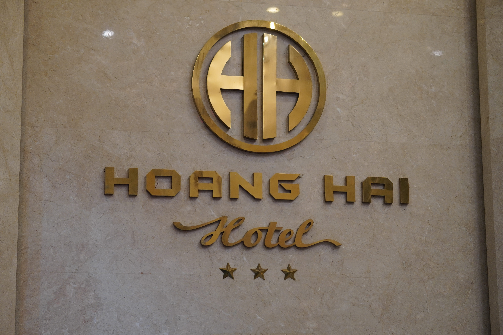
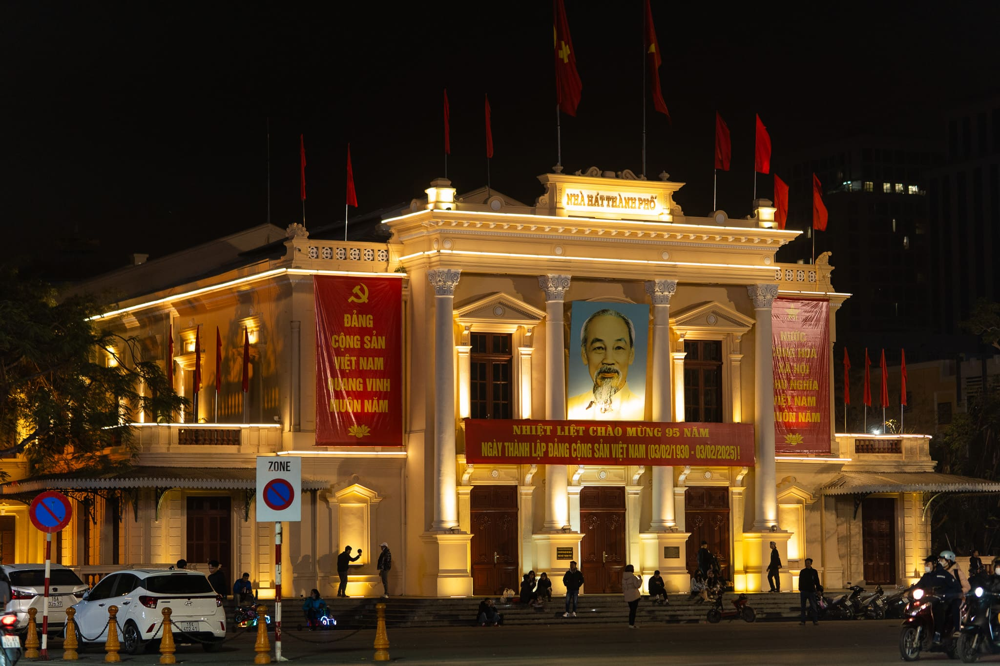
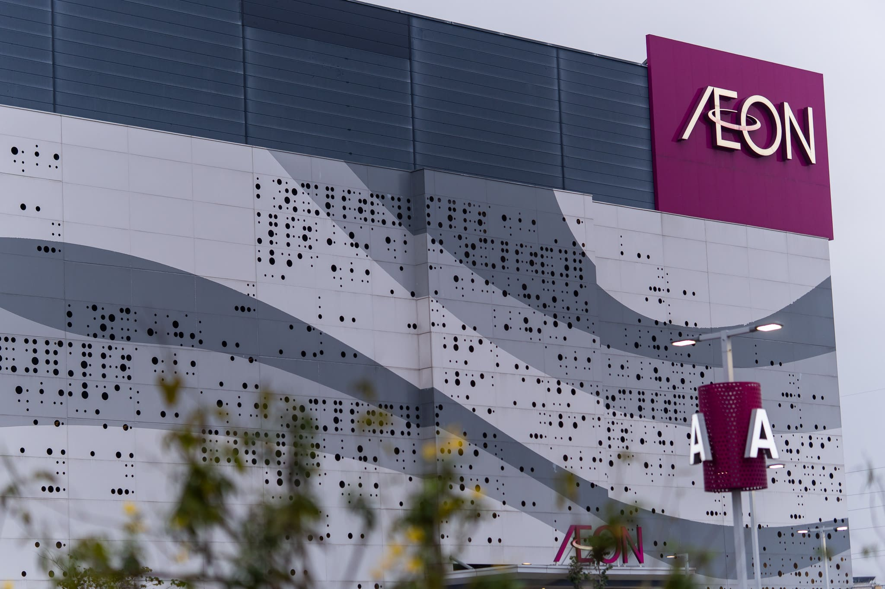
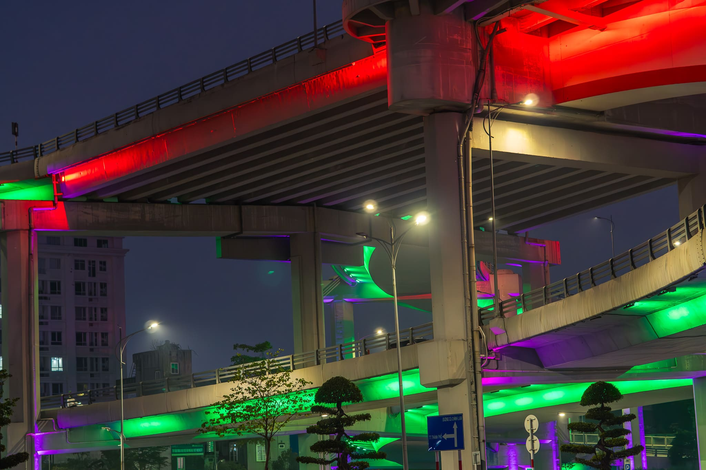
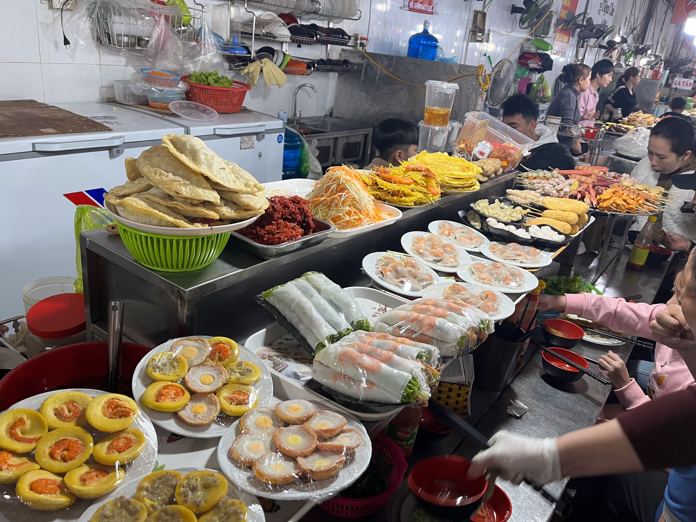
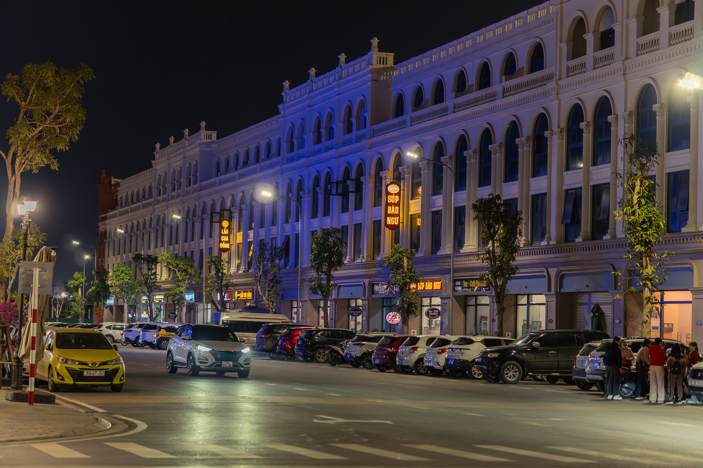

ハイフォンおすすめ観光地
板垣穂乃花
この資料ではハイフォンの７つの観光地について紹介します。写真がある場所は実際に訪れた感想をもとに執筆しています。写真がない場所は行くことができなかった場所なので、行くことがあればぜひ写真を撮ってみてください！
今回の宿泊場所
Hoang Hai Hotel ホアンハイホテル
今回の宿泊場所です。１階に食事をする場所があり、朝ごはんはそこでバイキングを食べられます。ベトナム料理はもちろん、ホテル側のご好意でご飯やお味噌汁を用意していただき、日本食も食べることができました。
お部屋には日本の一般的な設備と同じくベッド、テレビ、椅子・机、クローゼット、浴室などがあり少々外の音が聞こえますが、ゆったり過ごせる空間です。
洗濯はランドリーサービスがあり、最終日のチェックアウト時に使った分だけお支払いすることになります。料金は出す服の種類によって違います。2024年度は、お金がかかるため数回使ったもしくは一度も使わなかったという人が多かったように思えます。
ホアンハイホテル 公式ホームページNhà hát lớn Hải Phòng ハイフォンオペラハウス
ベトナム建国の父であるホーチミンが印象的な建物です。観光客の写真撮影、現地の人たちの待ち合わせ場所や遊び場として使われており、老若男女広い年代に親しまれています。
オペラハウスの周りには多くの飲食店があり、ベトナム料理を楽しむことができたり、サークルKというコンビニエンスストアがあり買い物をすることもできます。オペラハウスという名前がついていますが、筆者はタイミングが悪く、中での催し物が見れませんでした...
今回の宿泊場所から徒歩で５分ほどの場所にあるので非常に馴染み深い建物になると思います。近くには噴水のある広場があり、夜はライトアップされて綺麗なのでぜひお散歩してください！人通りも多く、明るい場所なので細い道に入らなければ、夜でも安心して歩けます。
Bảo tàng Hải Phòng ハイフォン博物館
ハイフォンの歴史を紹介している博物館です。外国人観光客に特に人気の観光スポットで、入場料は無料です！この施設も宿泊施設から徒歩で10分ほどの距離にあるため、研修中にぜひ足を運んでみてください。
AEON MALL Hải Phòng Lê Chân イオンモール
ベトナム最大のイオンモールでベトナム特有のお店もあれば、日本にもある100円均一や丸亀製麺などのお店もあります。日本食のレストランや日本製の食べ物の販売があるため、体調やメンタルを崩した際に本当にお世話になりました…
また、ポイントを貯めて景品と交換する日本とは違った形式のゲームセンターがあるのでタンデムーパートナーや友達との遊びにぴったりです！
Hoàng Văn Thụ ホアン・ヴァン・トゥ
夜に七色に光るイルミネーションが特徴の橋です。さまざまな色に変化する橋が綺麗で、橋の下にある街灯もおしゃれでした。飲み物の販売があるという噂がありますが、私が行った平日の夜にはなく、橋の下で現地の方がエアロビクスを踊っている人がいました。そんな現地の人の営みを見ることができる場でもあります。もし、研修中に行くことがあればどんな人がいるか目を凝らしてみてください！
Bãi biển Đồ Sơn ドソンビーチ
ドソン地区にあるビーチです。こちらは夕日がおすすめのスポットなので、夕方に訪れるのが◎。また、ドソン地区にはCông viên Đồi Rồng Hải Phòng（ハイフォンウォーターパーク）、Đồi Rồng Đồ Sơn（ドソンドラゴンヒル）といった人気のウォーターパークがあり、ハイフォン市民の多くが夏に訪れるため、夏の風物詩になっています。研修の派遣時はシーズンではありませんが、もし夏にハイフォンを訪れる機会があればぜひ！
Chợ Cát Bi カットビ市場
ハイフォンで一番大きい市場です。ベトナム特有の食文化を楽しむことができるので、ハイフォンでベトナム料理を楽しむにはおすすめのスポットです！この場所にはベトナム人の友人に案内してもらいました。ベトナムの料理はもちろん、衣料品も販売されていて、現地の方が多く訪れていました。
今回はベトナム人の友人に案内してもらったため、料理の注文がスムーズにできました。非常に感謝です。ベトナムに不慣れな人がこの市場に行くと目の前に料理があっても、それがなんの料理かわからず店員さんも忙しそうにしていたため、聞くことも難しそうでした。
もし行く際は、現地に詳しい方と一緒に行くのがおすすめです！また、氷が入っている飲食物があった場合は水道水を使った氷かもしれないので、抜いてもらう・食べないなどの対処をすることをおすすめします。
Đảo Vũ Yên ヴイエン島
ハイフォンの大きな観光地区です。島ではありませんが、島のように見える地区なのでこのような名前がついています。この地区には二つの主な見どころがあります。
○Phố đi bộ Vũ Yên ヴイエンウォーキングストリート
周辺の建物を見て楽しむハイキングコースです。週末にはベトナムで大人気の歌番組が大きなディスプレイで放映されたり、花火が上がったりと休日のレジャーにおすすめです。ブイエンウォーキングストリートの特徴的だったところは顔はめ看板や特徴的な建物などフォトスポットが多くあったことです。飲食店もありますが、歩くだけでも景色が楽しい場所でした！
ブイエン島はハイフォン市内をつなぐ船で行くことができます。タクシーで行くことも可能ですが、帰りが夜遅くなるとき（21時過ぎ）はGrabで拾えるタクシーがとても少なくなるので船がおすすめです。ブイエン島内はGrabで拾えるタクシーがほとんどなかったため、訪れるときは特に気をつけてほしいポイントです。
○Công viên văn hóa Hàn Quốc K-Park 韓国文化公園
ベトナムと韓国の融合が体験できる公園です。韓国風の建物や韓国文化を体験することができます。ステージがあり、週末にはベトナムのアイドルがショーを開催することもあります。近くにあるレストランは韓国料理だけではなく、日本料理もありアジアの料理が楽しめる場所でした。
今回紹介した場所をGoogle Mapにまとめました！ぜひ研修中に使ってみてください。
Googleマップリスト